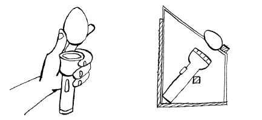
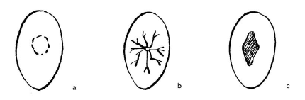

ຄໍານິຍາມແລະຂໍ້ໄດ້ປຽບຂອງການ hatching ທີ່ມີໂຄງການ
ການຟັກໄຂ່ແບບແຜນວິທີແມ່ນວິທີໜຶ່ງຂອງແມ່ໄກ່ເພື່ອຟອກໄຂ່ຫຼາຍກວ່າໜຶ່ງຊຸດ ແລະ ລູກໄກ່ຖືກລ້ຽງເປັນຊຸດທີ່ມີອາຍຸດຽວກັນ. ໃນສັ້ນ, hens ໄດ້ຖືກນໍາໃຊ້ເປັນ incubators ສໍາລັບໄຂ່ຈໍານວນຫຼາຍຈາກ hens ທີ່ແຕກຕ່າງກັນ. ການຟັກໄຂ່ແບບມີໂປຣແກຣມເປັນວິທີທີ່ໄວ ແລະລາຄາຖືກ ໃນການເພີ່ມຈໍານວນໄກ່ຢູ່ໃນຟາມ. ໂດຍເນື້ອແທ້ແລ້ວຂອງໂຄງການແມ່ນກໍານົດເວລາ ( synchronization ) ຂອງການ hatch ໂດຍກຸ່ມຂອງ hens ທ້ອງຖິ່ນເພື່ອຜະລິດຈໍານວນຫຼາຍຂອງ chicks ອາຍຸຂອງອາຍຸດຽວກັນຫຼືວົງເລັບອາຍຸ. ຂໍ້ດີລວມມີ:
- ໄກ່ຫຼາຍໂຕແມ່ນ hatched ໃນມື້ດຽວກັນແລະດັ່ງນັ້ນມັນງ່າຍກວ່າທີ່ຈະສັກຢາວັກຊີນແລະການຄຸ້ມຄອງນົກ.
- ການສ້າງ batch ຂອງນົກແມ່ນງ່າຍຂຶ້ນ, ເຊິ່ງເຮັດໃຫ້ມັນງ່າຍຂຶ້ນໃນການລ້ຽງເປັນກຸ່ມ.
- ຊາວກະສິກອນສາມາດວາງແຜນລ່ວງໜ້າໄດ້ວ່າເວລາໃດຈະອອກຕະຫຼາດນົກ (ກຳນົດເວລາງານບຸນເພື່ອຕະຫຼາດທີ່ດີ).
- ບໍ່ຕ້ອງມີການອົບພະຍາດເພາະສະນັ້ນນະວັດຕະກໍາແມ່ນເຫມາະສົມສໍາລັບເຂດຊົນນະບົດ.
- ນົກຊະນິດສາມາດ hatch ເຖິງ 7 ເທື່ອຕໍ່ປີເມື່ອທຽບກັບສອງຫຼືສາມຄັ້ງທີ່ມີການຟອກແບບທໍາມະດາແລະການລ້ຽງໄກ່ໂດຍ hens.
- ລູກໄກ່ຖືກຜະລິດດ້ວຍລາຄາທີ່ຖືກກວ່າ ເນື່ອງຈາກຊາວກະສິກອນບໍ່ຈຳເປັນຕ້ອງຂົນສົ່ງຈາກເມືອງໄກ, ຄືກັບລູກໄກ່ທີ່ເປັນການຄ້າ.
- ວິທີການຟອກໄຂ່ທີ່ມີໂຄງການມີທ່າແຮງທີ່ຈະເພີ່ມຂຶ້ນສາມເທົ່າຂອງຕົວເລກຕົ້ນເດີມໃນປີຫນຶ່ງເມື່ອປະຕິບັດຢ່າງພາກພຽນ. ໃນທາງກົງກັນຂ້າມ, ການລ້ຽງສັດປີກທີ່ມີຜົນຜະລິດຫຼາຍສາຍພັນເຊັ່ນ Kuroilers ກັບໄກ່ທ້ອງຖິ່ນ, ໃນທາງກົງກັນຂ້າມ, ສາມາດປັບປຸງຈໍານວນໄຂ່, ຂະຫນາດແລະນ້ໍາຫນັກຕົວຂອງລູກຫລານຕໍ່ໄປ. ນີ້ສະເຫນີຂໍ້ໄດ້ປຽບເພີ່ມເຕີມຂອງຄວາມງ່າຍໃນການຄຸ້ມຄອງແລະການຕໍ່ຕ້ານພະຍາດຂອງສາຍພັນພື້ນເມືອງ.
ການລ້ຽງຝູງສັດສໍາລັບການ hatching ທີ່ມີໂຄງການ
ມັນງ່າຍທີ່ຈະເລີ່ມການອອກໄຂ່ທີ່ມີໂຄງການກັບກຸ່ມອາຍຸດຽວກັນຂອງ hens ທີ່ລ້ຽງຮ່ວມກັນຫຼື hens ທີ່ເລີ່ມວາງປະມານເວລາດຽວກັນ. ຖ້າບໍ່ດັ່ງນັ້ນ, ບາງຄັ້ງມັນກໍ່ເປັນສິ່ງທ້າທາຍທີ່ຈະເລີ່ມຕົ້ນໂຄງການ. ເພື່ອເລີ່ມຕົ້ນໂຄງການ, ຫນຶ່ງສາມາດເລືອກທາງເລືອກຕໍ່ໄປນີ້:
- ຊື້ chicks ຫຼື pullets ວົງເລັບອາຍຸດຽວກັນ (ບໍ່ເກີນຫນຶ່ງເດືອນຄວາມແຕກຕ່າງຂອງອາຍຸ) ຈາກແຫຼ່ງທີ່ຮູ້ຈັກ. ລ້ຽງພວກມັນຮ່ວມກັນພາຍໃຕ້ການຄຸ້ມຄອງດຽວກັນຈົນກ່ວາການເລີ່ມຕົ້ນຂອງການວາງໄຂ່.
- ເລືອກ pullets ຈາກ flock ຂອງທ່ານໃນວົງເລັບອາຍຸທີ່ຄ້າຍຄືກັນບໍ່ເກີນຄວາມແຕກຕ່າງຂອງອາຍຸຫນຶ່ງເດືອນແລະລ້ຽງໃຫ້ເຂົາເຈົ້າໂດຍສະເພາະເພື່ອເລີ່ມຕົ້ນການ hatching ຕາມໂຄງການ. ມັນຕ້ອງໄດ້ຮັບການດຶງຈາກພໍ່ແມ່ທີ່ມີລັກສະນະທີ່ຕ້ອງການ.
- Wean ແລ້ວລ້ຽງ hens ປະມານເວລາດຽວກັນແລະລ້ຽງ chicks ດ້ວຍຕົວທ່ານເອງ. ແນະນໍາ cocks ກັບ hens weaned ອາທິດຕໍ່ມາ, ເພື່ອກະຕຸ້ນກິດຈະກໍາການປັບປຸງພັນ.
ໃນທາງເລືອກເຫຼົ່ານີ້ທັງຫມົດ, ພວກເຮົາມີຄວາມສົນໃຈໃນການມີ hens ທີ່ຈະເລີ່ມຕົ້ນການວາງປະມານເວລາດຽວກັນເພື່ອໃຫ້ພວກເຮົາເກັບກ່ຽວຜົນປະໂຫຍດຂອງການ hatching ທີ່ກໍານົດໄວ້ຂ້າງເທິງ. ດັ່ງນັ້ນ, hens ແມ່ນຫຼັກຊັບຈໍາກັດທີ່ສໍາຄັນທີ່ສຸດທີ່ຈະໄດ້ມາ. Cocks ສາມາດໄດ້ຮັບການແນະນໍາພຽງແຕ່ໃນເວລາທີ່ທ່ານມີປະມານຫນຶ່ງອາທິດເພື່ອເລີ່ມຕົ້ນໂຄງການ. ໄກ່ບໍ່ຄວນຢູ່ໃນບ່ອນດົນກວ່າ 6 ເດືອນເພື່ອປ້ອງກັນການສືບພັນ.
ຫຼັກຊັບສໍາລັບໂຄງການຄວນໄດ້ຮັບການດູແລໃນເງື່ອນໄຂຂອງການໃຫ້ອາຫານເສີມ, ການປ້ອງກັນພະຍາດເຊັ່ນ, ໂດຍການສັກຢາປ້ອງກັນແລະການຄວບຄຸມການສືບພັນ.
synchronization ຂອງ hens , ການ ຄຸ້ມ ຄອງ ການ ວາງ ໄຂ່ ແລະ ຂະ ບວນ ການ incubation
- ເພື່ອ synchronize hens ໃນໂຄງການນີ້ຫມາຍຄວາມວ່າເຮັດໃຫ້ພວກເຂົາເລີ່ມຕົ້ນການວາງປະມານເວລາດຽວກັນຫຼື hatch ປະມານເວລາດຽວກັນ. Synchronization ແມ່ນສິ່ງທ້າທາຍໃນນົກທ້ອງຖິ່ນທີ່ມີອາຍຸແຕກຕ່າງກັນແຕ່ສາມາດບັນລຸລະດັບທີ່ສົມເຫດສົມຜົນ.
- ຖ້າພວກເຮົາເລີ່ມຕົ້ນດ້ວຍລູກໄກ່ຫຼື pullets ອາຍຸດຽວກັນ, ພວກເຮົາລໍຖ້າຈົນກ່ວາ 30% ຂອງພວກເຂົາເລີ່ມວາງແລະແນະນໍາ cocks. ຫຼື cocks ອາດຈະໄດ້ຮັບການແນະນໍາໃນເວລາທີ່ pullets ຢູ່ໃນອາຍຸ 5 ເດືອນ. ຈືຂໍ້ມູນການວາງໄຂ່ສາມາດເລີ່ມຕົ້ນໄດ້ເຖິງແມ່ນວ່າບໍ່ມີ cocks ຢູ່.
- ທາງເລືອກອື່ນແມ່ນການເອົາໄກ່ອອກຈາກຝູງທີ່ມີຢູ່ແລ້ວແລະແນະນໍາພວກມັນຄືນໃຫມ່ເມື່ອມີຢ່າງຫນ້ອຍ 5 ໄກ່ໄດ້ເລີ່ມຕົ້ນການວາງ. ນອກຈາກນັ້ນ, ຈົ່ງຈື່ໄວ້ວ່າການຫາຄູ່ຫນຶ່ງສາມາດສົ່ງຜົນໃຫ້ໄຂ່ອຸດົມສົມບູນເປັນເວລາສາມມື້.
- ຖ້າຫາກພວກເຮົາມີ hens ເຄື່ອນຍ້າຍໄປກັບ chicks ຂອງພວກເຂົາ, ພວກເຮົາຕ້ອງແຍກພວກເຂົາແລະລ້ຽງ chicks ໃນເຮືອນ. ຫຼັງຈາກນັ້ນ, ພວກເຮົາແນະນໍາ cocks ກັບ hens ແຍກອອກຫນຶ່ງອາທິດຫຼັງຈາກການຫົດ.
- ເພື່ອຮັບປະກັນຄວາມອຸດົມສົມບູນຂອງໄຂ່, ແນະນໍາໃຫ້ຮັກສາໄກ່ຫນຶ່ງສໍາລັບທຸກໆແປດ hens.
- ໄກ່ແຕ່ລະໂຕແມ່ນໃຫ້ຮັງຂອງຕົນເອງ. ຮັງຄວນໄດ້ຮັບການຫມາຍເລກສໍາລັບການກໍານົດແລະບັນທຶກການຜະລິດ hen. ຮັງບໍ່ຄວນປ່ອຍໃຫ້ໄຂ່ຂອງເພື່ອນບ້ານເຫັນເມື່ອ hen ນັ່ງຢູ່ໄຂ່ຂອງມັນ.
- ເມື່ອ hen ເລີ່ມວາງ, ໄຂ່ທໍາອິດຖືກເອົາອອກ, ຕົ້ມ, ຫມາຍດ້ວຍ pencil ແລະຖືກຈັດໃສ່ໃນຮັງເປັນ decoy ໄດ້. ການຕົ້ມໄຂ່ຈະຊ່ວຍຫຼຸດໂອກາດຂອງການເສື່ອມ ແລະ ໄຂ່ແຕກທີ່ຈະປົນເປື້ອນຜູ້ອື່ນ.
- ທຸກໆມື້, ໄຂ່ທີ່ວາງໄວ້ໄດ້ຖືກໂຍກຍ້າຍອອກແລະວັນທີຂອງການໂຍກຍ້າຍໄດ້ຖືກຫມາຍດ້ວຍ pencil ໃນດ້ານກວ້າງຂອງໄຂ່ແຕ່ລະຄົນ. ໄຂ່ຖືກໃສ່ໃສ່ຖາດໄຂ່ທີ່ສະອາດດ້ວຍປາຍກວ້າງທີ່ຫັນຫນ້າຂຶ້ນແລະເກັບຮັກສາໄວ້ໃນບ່ອນທີ່ປອດໄພ, ເຢັນແລະຊຸ່ມຊື່ນ, ຕົວຢ່າງເຊັ່ນໃນກ່ອງໃນຂຸມໃນຊັ້ນຂອງບ່ອນທີ່ເຢັນທີ່ສຸດຂອງເຮືອນ.
- ໄຂ່ຄວນຈະສົດກ່ອນທີ່ຈະ incubation. ອາຍຸຂອງໄຂ່ຄວນຈະບໍ່ເກີນ 7 ມື້, ເມື່ອເກັບຮັກສາໄວ້ໃນບ່ອນທີ່ເຢັນ.
- ປົກກະຕິແລ້ວ, ຫຼັງຈາກເວລາໃດຫນຶ່ງ, ນົກຊະນິດຫນຶ່ງເລີ່ມ incubating ໂດຍພັກຄ້າງຄືນຢູ່ໃນໄຂ່ຕົ້ມ. ນົກຊະນິດນີ້ບໍ່ໄດ້ໃຫ້ໄຂ່ທີ່ອຸດົມສົມບູນໃດໆ ແຕ່ຖືກປະໄວ້ໃຫ້ນັ່ງຢູ່ເທິງເຕົາອົບ (ໄຂ່ຕົ້ມທີ່ໝາຍເຖິງ) ປະມານສິບມື້ ຫຼືຈົນກວ່າໂຕອື່ນຈະເລີ່ມອົບ. ຫຼັງຈາກປະມານສິບມື້ນັບຈາກເວລານົກໂຕທຳອິດເລີ່ມນັ່ງໄຂ່, ໄກ່ອື່ນໆສ່ວນໃຫຍ່ກໍຈະເລີ່ມນັ່ງຕອກໄຂ່ຂອງມັນເຊັ່ນກັນ.
- ຫຼັງຈາກນັ້ນ, ໄກ່ທີ່ອົບທັງໝົດແມ່ນໃຫ້ໄຂ່ທີ່ອຸດົມສົມບູນ 10 ຫາ 12 ໜ່ວຍ, ໂດຍເລີ່ມຈາກໄຂ່ທີ່ວາງໄວ້ສຸດທ້າຍ. ໄຂ່ຈາກ hen ບໍ່ຈໍາເປັນຕ້ອງໄດ້ incubated ໂດຍ hen ໄດ້ວາງໄວ້. ດັ່ງນັ້ນ, ພວກເຂົາສາມາດຖືກຈັດໃສ່ແບບສຸ່ມ.
- ເພື່ອໃຫ້ໄດ້ຜົນການຟອກທີ່ດີທີ່ສຸດ, ໄຂ່ທີ່ເລືອກສໍາລັບການຟອກຄວນຈະມີຂະຫນາດສະເລ່ຍແລະຮູບຮ່າງປົກກະຕິສໍາລັບສາຍພັນ. ເມື່ອໃຫ້ໄຂ່ໃຫ້ແມ່ໄກ່ນັ່ງຢູ່, ຄວນຫຼີກລ່ຽງໄຂ່ປະເພດດັ່ງຕໍ່ໄປນີ້ເພື່ອໃຫ້ໄຂ່ອອກໄຂ່:
- ໄຂ່ທີ່ມີຂະຫນາດນ້ອຍເກີນໄປ
- ໄຂ່ທີ່ມີຮູບກົມ/ຮູບຊົງເກີນໄປ
- ໄຂ່ທີ່ໃຫຍ່ເກີນໄປ
- ໄຂ່ທີ່ແຫຼມເກີນໄປ ຫຼື ມີເປືອກໄຂ່ຜິດປົກກະຕິ (ລວມທັງຮອຍແຕກ). ຖ້າມີຮອຍແຕກຢູ່ໃນເປືອກ, ການສູນເສຍຄວາມຊຸ່ມຊື່ນຈາກໄຂ່ສາມາດສູງເກີນໄປແລະ embryo ອາດຈະຕາຍ. ນອກຈາກນີ້ຍັງມີຄວາມສ່ຽງຂອງເຊື້ອແບັກທີເຣັຍເຂົ້າໄປໃນໄຂ່, ເຊິ່ງອາດຈະເຮັດໃຫ້ embryos ບໍ່ດີຫຼືຕາຍ.
- ໄຂ່ເປື້ອນຫຼາຍ (ມີການຫຼຸດລົງຫຼືຝຸ່ນໃສ່ພວກມັນ).
- ສຸຂາພິບານຂອງການວາງຮັງແມ່ນມີຄວາມສໍາຄັນ, ເຊັ່ນດຽວກັນກັບອາຫານແລະນ້ໍາສໍາລັບ hens incubating. ສິ່ງສໍາຄັນແມ່ນການຄວບຄຸມແມ່ກາຝາກພາຍນອກໃນການ incubating ນົກ.
- ໃນລະຫວ່າງການ incubation ທ່ານສະເຫມີຄວນກວດກາເບິ່ງວ່າໄຂ່ແມ່ນອຸດົມສົມບູນແລະທີ່ບໍ່ມີລູກ. ໄຂ່ທີ່ອຸດົມສົມບູນພັດທະນາເສັ້ນເລືອດຢ່າງໄວວາ, ເຊິ່ງອາດຈະເຫັນກັບແສງແຫຼມຈາກໂຄມໄຟຫຼັງຈາກຫນຶ່ງອາທິດຂອງການ incubation ແລ້ວ  ທຽນໄຂທີ່ເຮັດຢູ່ເຮືອນໂດຍໃຊ້ມືຫຼືກ່ອງໄມ້, ແລະຈູດ. 
 ການກໍານົດໄຂ່ທີ່ເປັນຫມັນ (a) ໄຂ່ທີ່ຕາຍແລ້ວ (a) ແລະໄຂ່ທີ່ອຸດົມສົມບູນ.
ການກໍານົດໄຂ່ທີ່ເປັນຫມັນ (a) ໄຂ່ທີ່ຕາຍແລ້ວ (a) ແລະໄຂ່ທີ່ອຸດົມສົມບູນ. ຫຼັງຈາກ 7-10 ມື້ຂອງການ incubation ໄຂ່ສາມາດ candled ແລະໄຂ່ infertile ແລະໄຂ່ທີ່ມີ embryos ຕາຍສາມາດໄດ້ຮັບການໂຍກຍ້າຍອອກຈາກຮັງ. ຮູບທີ 58 ສະແດງໃຫ້ເຫັນທຽນໄຂແບບງ່າຍໆສອງອັນ ແລະຮູບ 59 ສະແດງໃຫ້ເຫັນວິທີການທີ່ໄຂ່ອຸດົມສົມບູນ, ໄຂ່ທີ່ເປັນຫມັນແລະໄຂ່ທີ່ມີຕົວອ່ອນທີ່ຕາຍແລ້ວແມ່ນຖືກກໍານົດເມື່ອອາຍຸ 7 ວັນ. ໃນເວລາທີ່ທຽນໄຂ, ໄຂ່ທີ່ອຸດົມສົມບູນມີເສັ້ນເລືອດທີ່ສັງເກດເຫັນແລະຈຸດດ່າງດໍາທີ່ເປັນ embryo. ເສັ້ນເລືອດສາມາດພັດທະນາໄດ້ຫຼາຍ ຫຼື ໜ້ອຍ ຂຶ້ນກັບວ່າ embryo ແຂງແຮງເທົ່າໃດ. ຖ້າ embryo ຕາຍ, ມັນເຫັນວ່າເປັນວົງຂອງເລືອດອ້ອມຮອບຕົວອ່ອນ. ໄຂ່ທີ່ເປັນໝັນມີຈຸລັງອາກາດຂະຫຍາຍໃຫຍ່ຂຶ້ນ ແລະ ໄຂ່ແດງເຮັດໃຫ້ເກີດຄວາມມືດໃນໄຂ່. ມັນເປັນສິ່ງສໍາຄັນທີ່ໄຂ່ທີ່ເປັນຫມັນແລະໄຂ່ທີ່ມີ embryos ຕາຍອອກຈາກຮັງຍ້ອນວ່າພວກມັນຈະເສື່ອມໂຊມແລະອາດຈະແຕກແລະທໍາລາຍໄຂ່ສົດພາຍໃຕ້ການຟອກ.
ເມື່ອເຈົ້າຕ້ອງການໃຫ້ນົກອອກໄຂ່ໃນວັນພະຫັດ, ພວກມັນໃຫ້ໄຂ່ໃນຕອນແລງວັນພຸດ, ແທ້ສາມອາທິດກ່ອນຫນ້ານີ້. ວິທີການດັ່ງກ່າວໄດ້ຜົນເພາະວ່າໄກ່ບໍ່ໄດ້ນັບໄຂ່ທີ່ມັນ incubate ຫຼືຈໍານວນມື້ທີ່ເຂົາເຈົ້າໄດ້ນັ່ງຢູ່ໃນໄຂ່.
- ການກໍາຈັດລູກໄກ່ຕ້ອງຢູ່ໃນບ່ອນມືດກ່ອນທີ່ hen ຈະອອກຈາກຮັງ, ຖ້າບໍ່ດັ່ງນັ້ນ, ມັນອາດຈະບໍ່ incubate ໄຂ່ຊຸດຕໍ່ໄປ.
- ຫຼັງຈາກເອົາລູກໄກ່ທີ່ອອກມາແລ້ວ, ໄກ່ສາມາດເອົາໄຂ່ທີ່ອຸດົມສົມບູນໃໝ່ມານັ່ງຖ້າຕ້ອງການ.